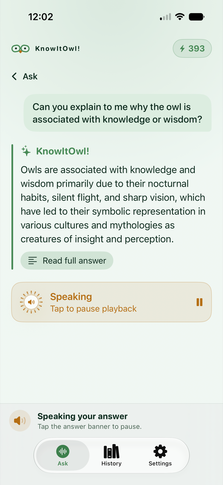
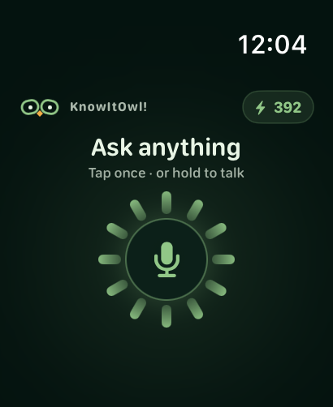
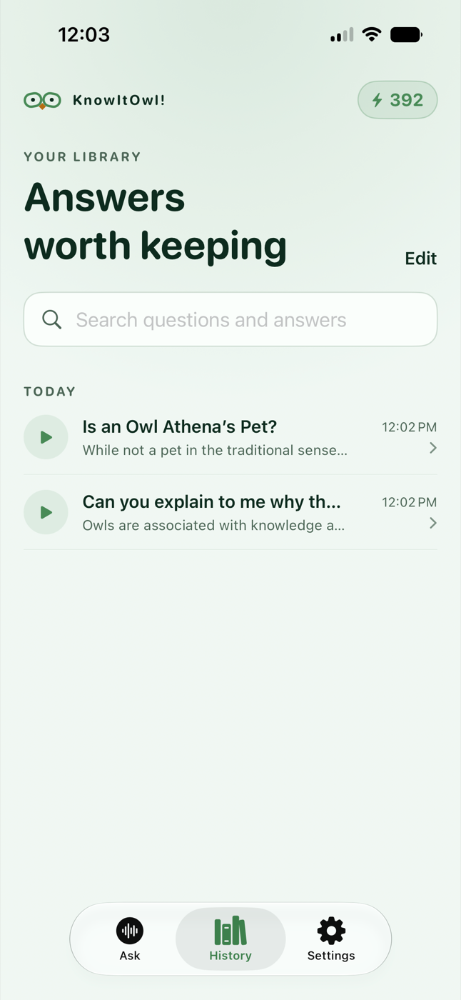
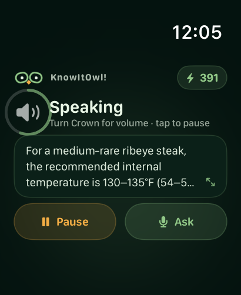

Ask
Tap or hold on Apple Watch. Speak or type on iPhone when quiet matters.
Voice-first answers on Apple Watch and iPhone—concise, conversational, and ready when your hands aren’t.


A simple rhythm
Tap or hold on Apple Watch. Speak or type on iPhone when quiet matters.
Get a concise answer in a natural voice. On Watch, turn the Digital Crown for volume.
Ask a follow-up, read the full response, or replay an answer later on iPhone.
New in version 4.0
For questions that benefit from current information, KnowItOwl! can ground its response with Google Search—then speak a concise answer back to you.
A focused answer, grounded with current web information when available.


Watch to iPhone
Ask independently from Apple Watch, then find the full response and shared history on iPhone. Voice questions play automatically. Typed questions stay silent until you choose Play.
We do not build a marketing profile from your activity.
Messages and audio are encrypted on-device before Firebase storage.
Withdraw AI consent or delete personal content from Settings.
Credits, plainly explained
Each voice or text question uses one credit. Add a pack only when you want one; purchased credits never expire.

Available for iPhone and Apple Watch.
Download on the App Store